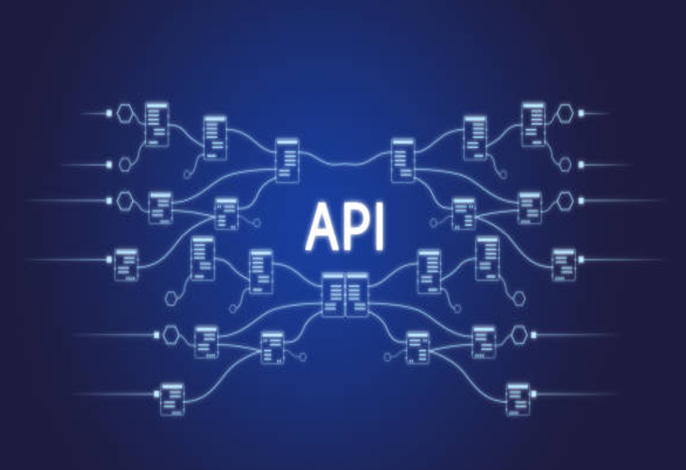

Hi, I'm
Aishwarya
Lead Technical Writer
I write product docs to help users learn and adopt technologies easily.
About Me
- Name: Aishwarya
- Preffered Location: Bangalore, Hybrid or Remote
- Email: aishbn@protonmail.com
- Social: Linkedin Page
Hi There! I am Aishwarya. I am a collaborative, detail-oriented technical writer, leader, and mentor with over 15 years of experience based out of Bangalore, India.
I have experience in creating, maintaining, and publishing high-quality product documentation.
My background includes working on Release Notes, User guides (Content Collections), Limited GA guides, Troubleshooting guides, and REST API Reference Guides across various domains such as Software, Networking, and Aerospace industries.
Apart from technical writing abilities, I have experience in initiating and leading project management activities to streamline documentation workflows, and document quality improvement efforts. I also specialize in restructuring content (information mapping) to enhance the usability and searchability of Release Notes and User Guide. I also create videos, .gifs, and interactive graphics using HTML, CSS, and JavaScript to make documentation more engaging.
I’m a strong team player and an able leader, who is also comfortable working independently or mentoring others. I am a proactive documentarian who likes collaborating with people, working on new technologies, and automating tasks to increase efficiency.
I have received several recognitions from various stakeholders for being collaborative, and proactive, understanding user’s needs, and delivering documentation in a timely and accurate manner.
I am actively seeking opportunities as a Documentation Manager or Lead Technical Writer. If you are looking for a dependable, collaborative, and results-driven professional to lead your documentation efforts, I will be delighted to connect.
Testimonials
Professional Experience
-
PALO ALTO NETWORKS
Lead Technical Writer, CybersecurityApr 2022 - Present
Responsibilities:
- Collaborate with cross-functional teams, such as DevOps, QA, UX, and customer-facing teams, to gather technical insights and documentation requirements for Prisma Cloud Security Posture Management (CSPM) features, known issues, and release notes.
- Create, update, and maintain technical documents such as Beta Guides, Limited GA guides, Admin guides, Troubleshooting guides, and Release Notes (PDFs and web-based) using the Doc-as-Code approach with tools such as Git, GitHub, VSCode, AsciiDoc, and AEM to meet the needs of technical and non-technical audiences.
- Create multimedia content such as videos and .gif images with Camtasia and Snagit to enhance user understanding.
- Collaborate with UX designers to review and edit UI elements—such as error messages, loading messages, tooltips, etc.—in Figma UI mocks to ensure alignment with business requirements and user experience.
- Conduct peer reviews to ensure readability, technical accuracy, and adherence to the style guide.
- Stage and publish the documents on Palo Alto Docs site using AEM.
- Monitor documentation quality and collect user feedback using Usabilla.
- Analyze key performance indicators (KPIs) to identify opportunities for improving the documents.
Key Achievements:
- Automated a few areas of Release Notes to pull the RN details from Jira and convert them into the required Asciidoc format using PowerShell script. This automation reduced manual effort, ensured content accuracy, and saved significant time from several hours to 30 mins.
- Used Generative AI to improve productivity. For example, generated PowerShell script from ChatGPT to segregate stale images from several repositories as a part of maintenance activity. This saved significant amount of time. It reduced the manual efforts and increased the productivity from 3 hrs to 2 mins.
- Led the successful implementation of the TechDocs Jira Project to streamline documentation request management. This initiative reduced late requests from 70% to 10%, increased accountability, and improved overall team productivity. Please see my Success Stories for more details.
- Performed information mapping (content restructuring) activities to support the revamp of Prisma Cloud Platform. Aligned content with user stories to enhance the usability and searchability of Release Notes and User Guides.
-
ORACLE INDIA PRIVATE LIMITED
Senior Technical Writer, NetworkingJun 2021 - Apr 2022
Responsibilities:
- Performed information mapping activities to enhance the structure, completeness, and readability of various technical documents.
- Established efficient review workflow process and tracked quality related KPIs to identify opportunities for improving the documents.
- Performed editorial reviews for all the 5G Cloud Native Core (CNC) documents such as User guides, Installation and Upgrade guides, Network Information Reports, REST API guides, and Release Notes as per Oracle Style Guide.
- Familiarization and testing of latest cloud native features.
- Interviewed new writers and managed the candidate evaluation process to support team growth.
Key Achievements:
- I played a key role in introducing and enhancing document review workflows, which included collecting user feedback and implementing improvements. As a result, grammatical errors were reduced, and content readability increased from 70% to 90%. Additionally, I contributed to developing an efficient Root Cause Analysis (RCA) process to further improve document quality.
-
NOKIA NETWORKS
Technical Content Specialist, NetworkingOct 2016 - Jun 2021
Responsibilities:
- Created, maintained, and published various documents such as Product description manual, User guide, Operate and Maintenance Manuals, Reference documents, Interface documents, Release documents, and Life Cycle Management documents for Nokia’s 5G products.
- Attended product feature meetings and scrum meetings to gather technical information to document various features.
- Researched and wrote technical information into pdf manuals and web-based documents for non-technical and technical users by following Nokia Style Guide and DITA standards.
- Coordinated with various stakeholders from the DevOps, QA testing, and customer-facing teams to obtain feature updates and getting the documents reviewed for technical correctness.
- Ensured delivery of quality documentation by following various reviews, publishing, and delivery processes.
- Monitored documentation quality through key performance indicators (KPIs) to track user engagement, and feedback.
Key Achievements:
- I designed and developed interactive graphics for approximately 40 static diagrams over 2 months, using HTML, JavaScript, and CSS (Rich Media) based on relevant use cases and leveraging the Adobe Creative Cloud Suite. As a result, the complex architecture diagrams became much easier for the audience to understand, allowing them to click on the diagrams to view pop-up descriptions and the functionality of each feature.
- I played a key role in driving the adoption of the Doc-as-Code process at Nokia. I trained about 15 team members across our department on Git and GitHub, helping to streamline version control and collaboration.
- I contributed to the creation of static site generator (SSG) websites using MkDocs, assisting with the transition of several legacy Word documents to Markdown. Over three months, we converted approximately four Word documents, each containing over 300 pages, into Markdown and published them on our MkDocs static site, along with multiple release versions. This transition resulted in easier document management, improved searchability, and enhanced collaboration with the engineering team.
- I interviewed new writers and interns, managing the candidate evaluation process. Additionally, I created training plans and mentored junior writers to help them produce high-quality documentation. These efforts contributed to the successful hiring and integration of four new team members.
-
TEXTRON INDIA PVT LTD
Senior Technical Author, Hardware and SoftwareJun 2010 - Oct 2016
Responsibilities:
- Collaborated with cross-functional teams to gather technical information, understand product functionality, and document processes for internal IT applications and aircraft manuals.
- Produced CAD illustrations and authored task procedures for various aircraft models by interviewing subject matter experts (SMEs) and analyzing engineering drawings and technical reports.
- Created, edited, maintained, and published user guides for internal applications to ensure usability and accessibility for end-users.
- Performed document reviews to ensure the efficient and accurate delivery of technical manuals.
- Conducted user research and gathered feedback to continuously assess and improve the quality of technical documentation.
- Participated in establishing new procedures and processes, documented insights and learnings, facilitated knowledge sharing among co-authors, and collaborated with SMEs to make workflow decisions.
- Developed Excel Macros to identify discrepancies in part numbers between technical documents and engineering reports. This initiative reduced errors, improved accuracy, and enhanced overall productivity.
- Created SharePoint-based internal knowledge center website to centralize information.
- Designed and built 5 responsive websites using HTML, CSS, and JavaScript for various company-wide events.
Key Achievements:
Education
-
Bachelors in Information Technology (B.Sc. I.T)
Annamalai University2009-2012
-
Aircraft Maintenance Engineer (A.M.E)
VSM Aerspace2004-2007
Certifications
Technical Writing Certificate
This classroom course from Blue Dots Consultancy, Bangalore, provided foundational knowledge in technical writing, covering key topics like writing documents, using various tools, conducting SME interviews, and creating documentation through capstone projects to kickstart my technical writing career.
Prompt Engineering for ChatGPT
Completed the comprehensive Prompt Engineering course by Vanderbilt University on Coursera. This course covered in-depth concepts related to applying prompt engineering with LLMs, utilizing prompt patterns, and creating prompt-based applications.
Documenting APIs
Completed a comprehensive course on writing documents for developer audiences by Tom Johnson on I’d rather be writing. This course provided in-depth insights and practical exercises on creating effective API documentation. This course is the gold-standard for learning API documentation.
Programming Foundations: APIs and Web Services
Completed a comprehensive course by Kesha Willams on Linkedin Learning covering web services, their benefits, and comparison of popular web service technologies such as REST, SOAP, GRAPHQL, along with hands on coding excerpts in Python.
Docker and Kubernetes
Completed a beginner course from Oracle to gain foundational knowledge in Containers and Container Orchestration. As a capstone project, developed a simple one-page website and successfully hosted it on Oracle Cloud.
Git and GitHub Bootcamp
Completed a comprehensive course by Colt Steele on Udemy, covering Git and GitHub fundamentals using Linux commands. This course equipped me with the skills to effectively use Git version control and GitHub in my daily tasks after transitioning to the Doc-as-code process.
Skills
Oxygen XML
DITA
Markdown
Asciidoc
Camtasia
SnagIT
Adobe Photoshop
MS Office Suite
Google Workspace
HTML/CSS
JavaScript
Git
GitHub
Gitlab
VSCode
Perforce
Jira
Confluence
My Works
-
-
-

-
-
-
 View Success Stories
View Success Stories
My Success Stories
The Success Stories PDF provides a detailed overview of the key challenges I encountered during my time at my current company, the strategic actions I took to address those challenges, and the positive results achieved through a series of initiatives. It highlights my contributions and showcases how my efforts have made a tangible impact on the company's goals and success.